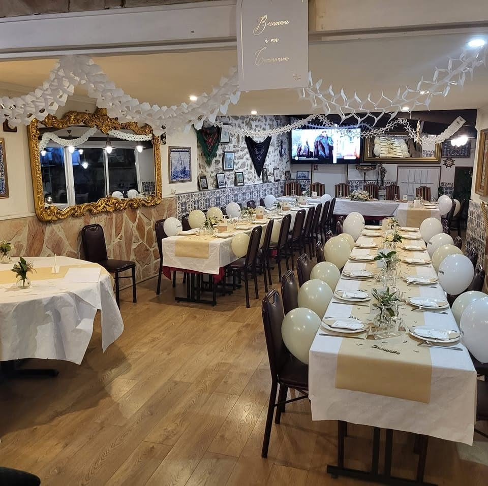

Sur la N20, entre Longjumeau et Montlhéry — parking sur place.
Tables, groupes, plats à emporter et commandes de cochon de lait — tout passe par le téléphone, comme au Portugal.
Horaires indicatifs — confirmez par téléphone pour les jours fériés et soirées spéciales.

Dates de fado, plats du moment et fêtes à venir s'annoncent sur
notre page Facebook